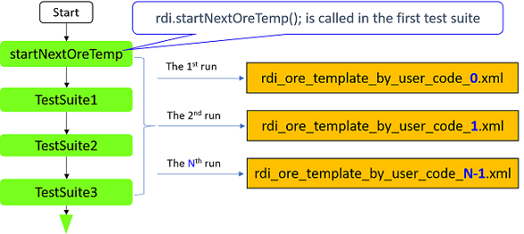

rdi.startNextOreTemp()
Defines a start point to separate each execution. The ORE result after the point will be put into a new ORE file named rdi_ore_template_by_user_code_N.xml.
In the first run, rdi_ore_template_by_user_code_0.xml will be generated.
In the second run, rdi_ore_template_by_user_code_1.xml will be generated.
In the N run, rdi_ore_template_by_user_code_N-1.xml will be generated.

Syntax
rdi.startNextOreTemp();
rdi.startNextOreTemp() can only be called in ON_FIRST_INVOCATION_BEGIN and ON_FIRST_INVOCATION_END. It must be called only once in the whole testflow; and it must be put in a test suite so it will not be skipped in any execution loop.
You must manually add </offlineResultEmulation> for the template file from
the last loop run.
Functional changes
- Introduced in SmartRDI 7.10.0